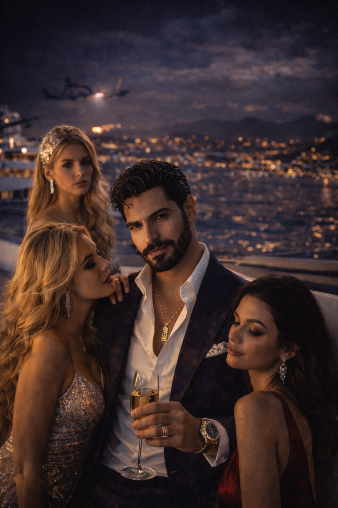
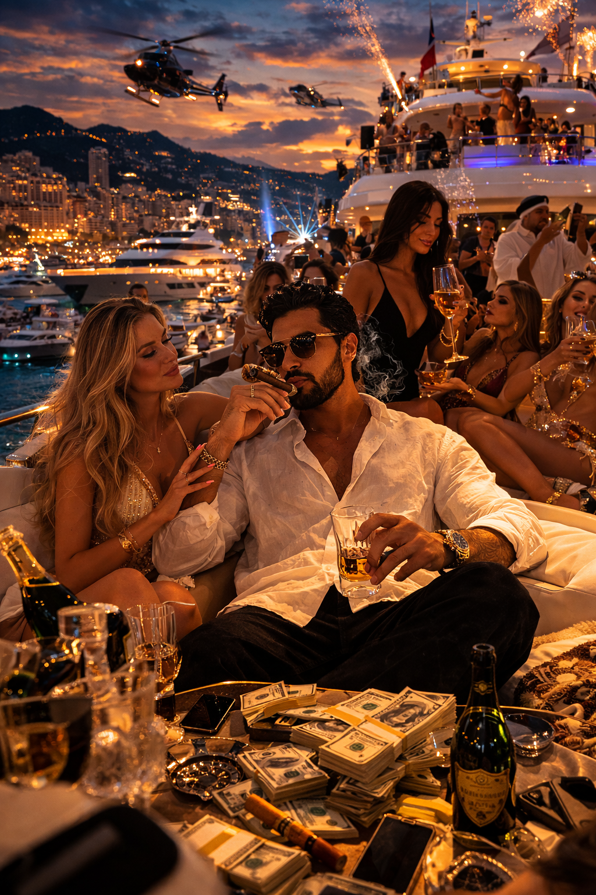
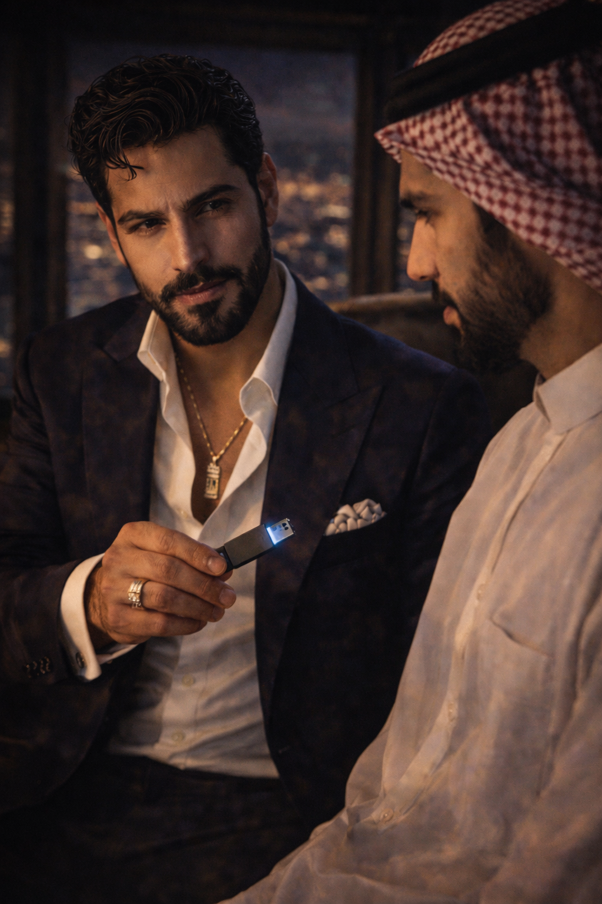
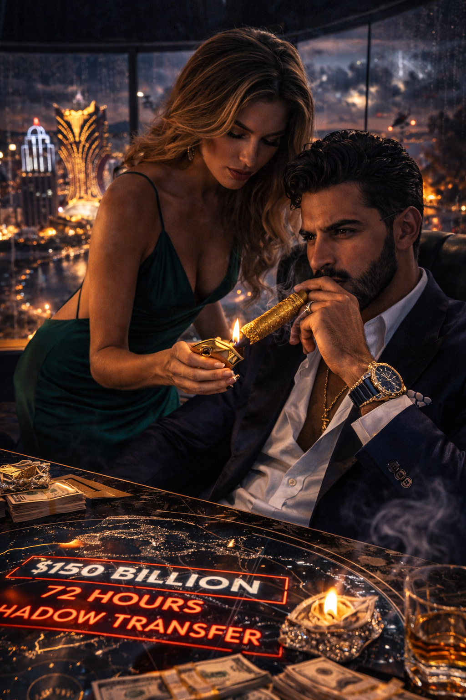
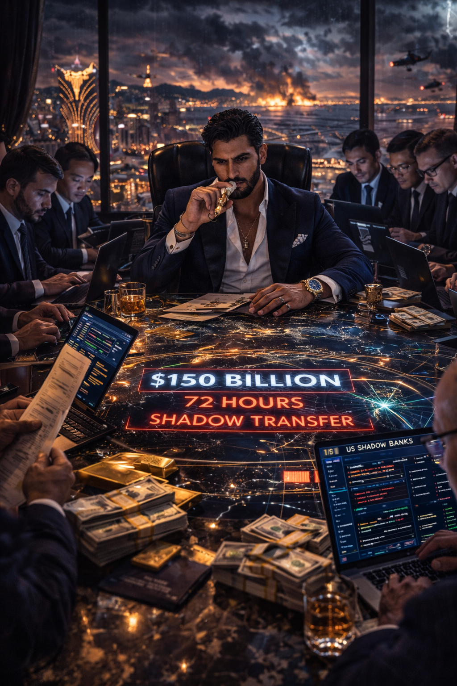
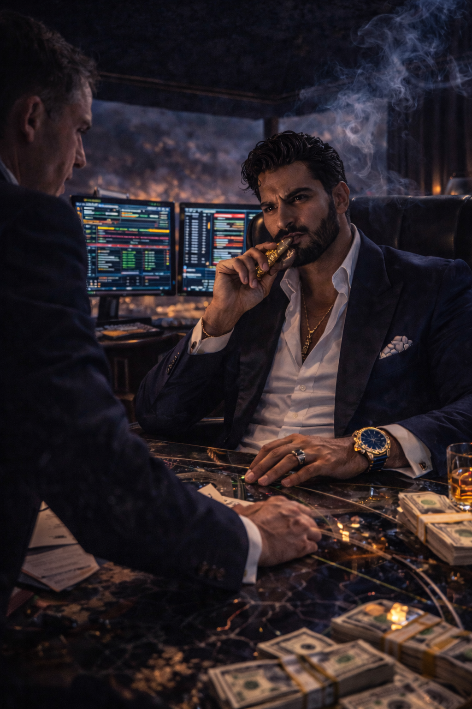
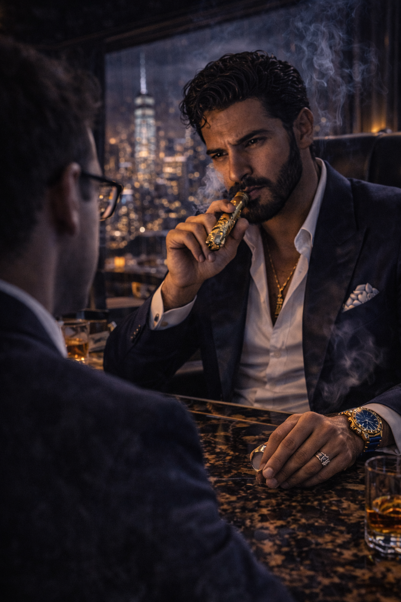
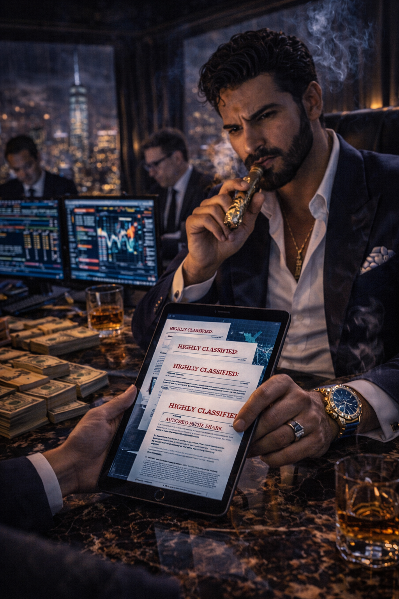

The Silk
Midnight / Decadence / Tom Ford
The Shark of Wall Street · Dossier
Tariq Al-Fayed — Sovereign Arbitrageur & Exiled Gulf State Royal

When the geopolitical tectonic plates finally cracked, they didn't issue press releases. The warning didn't come from CNN or Al Jazeera. It came in the form of absolute, terrifying silence on the international banking wires.
At 0400 hours, coordinated drone strikes decimated three critical oil refineries deep within Iranian territory. By 0415 hours, retaliatory hypersonic missiles were actively hunting American carrier strike groups in the Strait of Hormuz. The skies over the Persian Gulf were choked with burning crude and the contrails of fifth-generation fighters.
But the real war wasn't being fought with missiles. It was being fought with mathematics.
Deep within the Pentagon and the European Central Bank, the architecture of the "Mother of All Sanctions" was being violently assembled. Within exactly seventy-two hours, the United States Treasury, backed by SWIFT and NATO, was going to drop an iron curtain across the Middle East. They were preparing a total, devastating freeze on hundreds of billions of dollars in Gulf State sovereign wealth, effectively neutralizing the financial lifelines of the entire region to contain the conflict.
Tariq Al-Fayed was not a man who allowed his wealth to be frozen.
Tariq Al-Fayed was not banished from his homeland for treason, heresy, or attempting a coup against his brother, the Crown Prince. He was banished because his absolute, unadulterated decadence had become a geopolitical liability.

Before his exile, Tariq treated the national gross domestic product like a limitless stack of casino chips. He threw multi-million-dollar yacht parties in Monaco, Ibiza, and Saint-Tropez that shut down entire harbors. Tabloids relentlessly documented his sprawling entourages of European supermodels, high-end courtesans, and disgraced aristocrats. To the conservative ruling family back home, Tariq was a playboy spiraling out of control.
But what the tabloids — and his brother — never understood was that Tariq's decadence was a weapon.

The breathtaking women draping themselves over him on the sun decks of his superyachts weren't just arm candy. They were the "Sirens" — the most expensive, highly trained corporate espionage network on earth. Operating under the guise of high-society escorts, Tariq's Sirens attended the private galas of rival billionaires, slipped into the penthouses of London hedge fund managers, and fed the pillow-talk secrets of the global elite directly back to Tariq. He didn't just party with his rivals; he blackmailed them, front-ran their trades, and liquidated their assets while they were pouring his champagne.
Now operating out of a multi-level, neon-drenched penthouse suspended high above the Cotai Strip in Macau, Tariq commanded an intelligence and financial syndicate so massive it possessed its own gravitational pull. He was a "Whale" whose movements displaced oceans of liquidity.

Tariq's brother, the Crown Prince, had panicked. He secretly transferred control of the nation's sovereign wealth fund to Tariq's shadow accounts. Tariq now had three days to move one hundred and fifty billion dollars into the American shadow banking system entirely undetected. He couldn't use a cartel money launderer; they would buckle under the volume. He needed a rogue financial god.
The VIP room on the 88th floor of Tariq's penthouse smelled of ozone from the encrypted servers and the rich, heavy aroma of aged tobacco. The walls were lined in dark, crushed velvet, offering a dizzying, rain-streaked view of Macau's skyline.
Tariq sat at the head of a massive, glowing Baccarat table that had been converted into a crisis command center. He wore a midnight-blue silk dinner jacket, a custom sapphire Richard Mille tourbillon flashing on his wrist.

A stunning woman in a backless emerald silk gown — one of his top-tier Sirens — leaned over his shoulder. Using a solid-gold guillotine cutter, she prepped a Gurkha Royal Courtesan cigar — a rare tobacco leaf infused with Remy Martin Black Pearl Cognac and wrapped entirely in 24-karat gold leaf. She lit it with a cedar match, the fragrant smoke mingling with the scent of Tom Ford oud.

Surrounding the table were a dozen of the most dangerous quantitative analysts money could buy, frantically scouring the deepest trenches of the global economy.
"The Swiss nodes are dead," Tariq's chief intelligence officer reported, his face illuminated by the harsh glow of three Bloomberg terminals. "The Treasury Department dragnet is closing faster than anticipated. We have less than forty-eight hours, sir."
Tariq took a slow drag of the gold-wrapped cigar, exhaling a thick plume of smoke toward the velvet ceiling. "Then find me someone who doesn't use the Swiss," he purred. "Find me a predator."

At the far end of the table, a young data scientist from MIT slowly raised his hand.
"I... I think I found an anomaly, Your Highness," the scientist stammered. "It's a localized server cluster operating out of lower Manhattan. A digital fortress calling itself the World Trade Factory."
Tariq stopped rolling a ceramic casino chip through his fingers. "Explain."
"Seventy-two hours ago, the Obsidian Cartel suffered a catastrophic liquidity drain," the scientist said, projecting a massive data visualization onto the wall. "Three billion dollars vanished. The CIA thinks it was Iranian hackers. But the routing protocol... it wasn't a theft, sir. It was a hostile corporate takeover, executed in milliseconds. It was washed, fragmented, and buried in American real estate before the Cartel even realized they were bleeding."

"Three billion dollars," Tariq whispered, a dangerous smile touching his lips. "Who is the architect?"
"The dark markets call him The Shark," the chief intelligence officer interjected.
"He is not a myth, sir," the data scientist said, sliding a translucent glass tablet across the green felt. "I have decrypted fragments of his digital footprint. Do not look at the three billion he just stole from the Cartel. Look at his foresight."

Tariq picked up the tablet. The screen displayed a series of highly classified financial white papers authored under The Shark's alias.
"He sees the architecture of the crash before the concrete is even poured," the scientist explained. "Eighteen months ago, he mapped out the foundational rot in the Private Credit sector. He warned of a shadow banking collapse long before the defaults started. He saw the bubble when every hedge fund in New York only saw a gold rush."
Tariq swiped to the next file, his eyes narrowing.
"And this?" Tariq asked.
"The MicroStrategy leverage trap," the intelligence officer nodded. "When the rest of the market was blindly following Michael Saylor into leveraged crypto oblivion, The Shark actively hunted those overexposed positions. The Shark that ate the Saylor. He understood that extreme leverage in a highly volatile asset is a ticking time bomb. He called the absolute top and mercilessly liquidated the weak hands when the margin calls hit."
Tariq took another drag of the Gurkha cigar. "Brilliant," he whispered. He was no longer looking at a potential employee; he was looking at a peer.
"But it is what he didn't do that proves his discipline," the data scientist finished, pulling up a final chart detailing a recent market implosion. "When the synthetic funds tried to lure institutional capital into the Fairwater trap, offering impossible yields, The Shark refused the bait. The Shark that never swam Fairwater. He sat safely on the shore and simply watched the algorithmic traders drown themselves in their own greed. He is entirely immune to market hysteria."
For a long moment, the only sound in the penthouse was the relentless drumming of the Macau rain against the reinforced glass.
Tariq Al-Fayed slowly smiled. He had found his architect. But Tariq had more money than God, and he did not hand over the keys to an empire without testing the locks.
If The Shark was truly a financial god, he would be able to survive a catastrophic stress test.
"Open the terminals," Tariq commanded, the thrill of the hunt burning violently in his dark eyes. He stood up, walking toward the window to look out at his neon kingdom. "I want you to identify every shadow bank, shell corporation, and dark pool managed by the World Trade Factory. I want you to flood the market with synthetic shorts. Launch a direct, devastating attack on his liquidity."
"Sir," the chief analyst hesitated, turning pale. "Shorting a dark pool of that size, with that level of aggression... we could lose half a billion dollars in a single day just to apply the pressure. We will be burning cash."
The Siren in the emerald dress stepped forward, elegantly sliding a crystal glass of Cognac into Tariq's free hand.
"Then we burn half a billion dollars," Tariq laughed, the chaotic energy of the ultimate high roller taking total control. "This isn't an attack, gentlemen. This is a job interview. Let us see exactly how hard this Shark thrashes when a Whale decides to swallow his ocean."
The Sovereign Toolkit